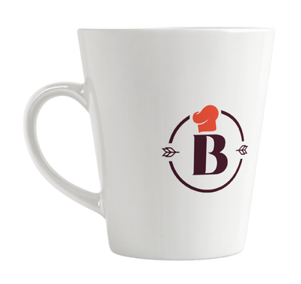

Badeco massas e salgados congelados
 
Desenvolvi a identidade visual para a Badeco Massas e Salgados Congelados, uma marca que
tem como proposta oferecer alimentos práticos, mas com sabor e afeto de comida caseira. O
conceito central foi criar uma comunicação visual que transmitisse proximidade, aconchego e
tradição, sem abrir mão de um visual moderno e acessível. Para isso, escolhi uma paleta de
cores composta por tons quentes e terrosos, como vermelho queimado, bege e marrom
escuro, que evocam a ideia de forno, cozinha e acolhimento.
O logotipo foi elaborado em uma tipografia sem serifa, com traços suaves e boa legibilidade,
reforçando a simplicidade e o caráter artesanal da marca. Elementos gráficos como ícones e
texturas remetem ao universo culinário, complementando a identidade e aproximando a
marca do cotidiano de seus consumidores. As aplicações foram pensadas para funcionar em
embalagens, peças digitais e materiais de PDV, sempre respeitando a harmonia visual e o
conceito afetivo do projeto.
O resultado é uma identidade visual funcional, emocional e de fácil reconhecimento, que se
conecta com o público por meio de sua proposta visual calorosa e sincera. A marca agora
comunica não apenas seu produto, mas também valores de cuidado, sabor e tradição. Foi
um projeto gratificante por permitir explorar a essência do design emocional e transformar
percepções através de pequenos detalhes visuais.